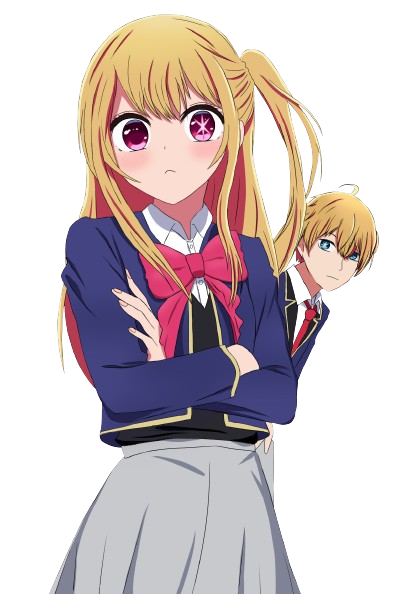

Where you last left off...
Starfire (real name Princess Koriand'r), or "Star" for short, is one of the main characters of the Teen Titans series. She is an alien princess from the distant world of Tamaran, and one of the five founding members of the Teen Titans...
Your Archives →
